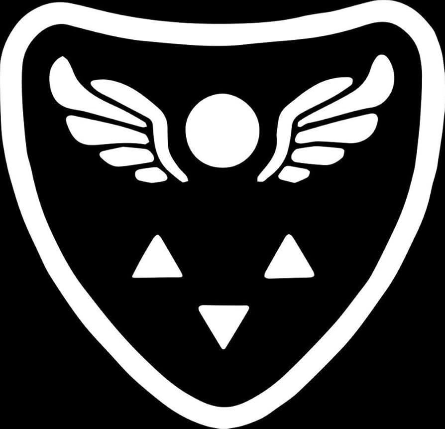
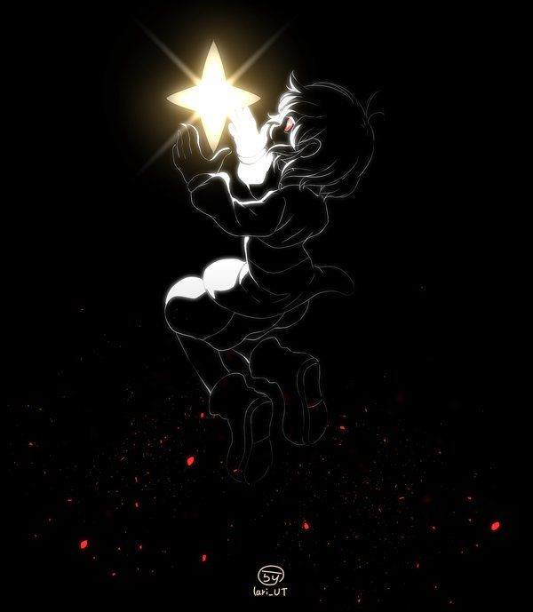

The monster's kingdom emblem
The Delta Rune is an emblem representing the Kingdom of Monsters. It is an orb between two wings and three triangles beneath it, with the middle triangle inverted.
It is first seen on a Boss Monster's robe during Undertale's introduction scene, and secondly on Toriel's robe, foreshadowing her role in the story. The emblem or portions of it are depicted in various areas, armor, and occasionally, monsters visually resemble it. The Delta Rune is said to predate written history. However, the original meaning has been lost in time. What is certain is the bottom triangles symbolize the monsters of the Underground. The winged circle is believed to represent the "angel," which is prophesized to be the one that has seen the Surface and will return one day to depopulate the underground. This prophecy has two interpretations: one where the "angel" destroys the barrier and brings freedom to the monsters, and a more recent outlook on it, where it is an "Angel of Death" that kills everyone in the Underground, thus "freeing" them from the mortal realm.
